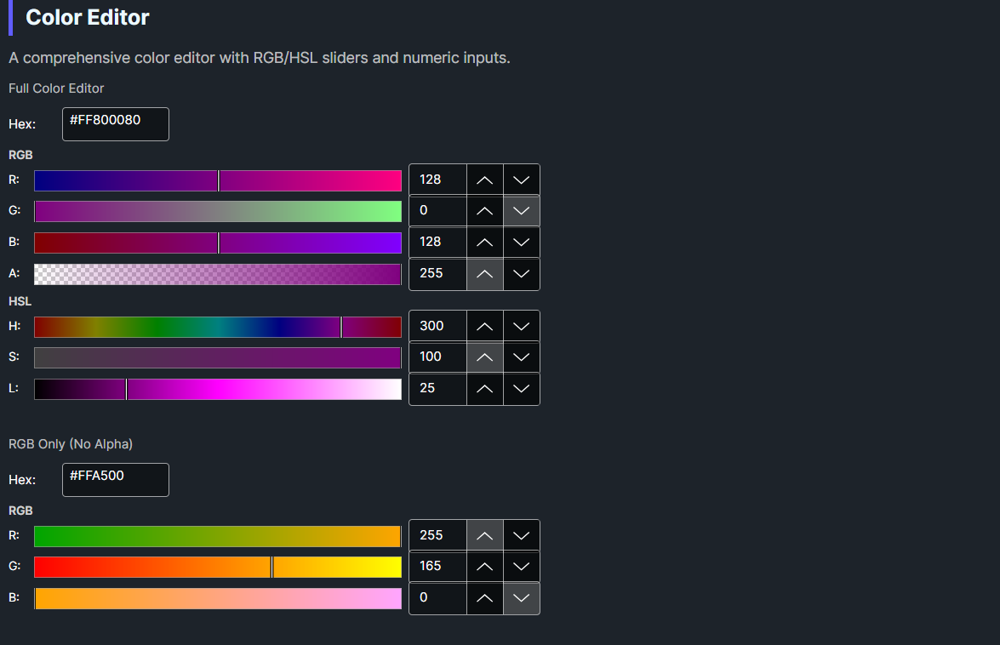

DaisyColorEditor is a comprehensive color editing control that combines RGB and HSL sliders with numeric inputs and a hex color field. It provides precise color manipulation through multiple input methods, making it ideal for professional color selection interfaces.
This is a standalone control with its own XAML theme (DaisyColorEditor.xaml). It can be used independently or as part of DaisyColorPickerDialog. When used in the dialog:
DaisyColorEditor.xamlDaisyColorPickerDialog.cs| Property | Type | Default | Description |
|---|---|---|---|
Color |
Color |
Red |
The selected RGB color |
HslColor |
HslColor |
H:0, S:1, L:0.5 |
The HSL representation |
EditingMode |
ColorEditingMode |
Rgb |
Current editing mode (RGB or HSL) |
ShowAlphaChannel |
bool |
true |
Show alpha channel controls |
ShowHexInput |
bool |
true |
Show hex color input field |
ShowRgbSliders |
bool |
true |
Show RGB slider section |
ShowHslSliders |
bool |
true |
Show HSL slider section |
OnColorChangedCallback |
Action |
null |
Optional callback when color changes |
| Property | Type | Range | Description |
|---|---|---|---|
Red |
byte |
0-255 | Red component |
Green |
byte |
0-255 | Green component |
Blue |
byte |
0-255 | Blue component |
Alpha |
byte |
0-255 | Alpha component |
Hue |
double |
0-359 | Hue in degrees |
Saturation |
double |
0-100 | Saturation percentage |
Lightness |
double |
0-100 | Lightness percentage |
HexValue |
string? |
- | Hex color string (e.g., "#FF0000") |
The ColorEditingMode enum determines the primary editing interface:
| Mode | Description |
|---|---|
Rgb |
Red, Green, Blue sliders and inputs |
Hsl |
Hue, Saturation, Lightness sliders and inputs |
editor.ColorChanged += (sender, e) =>
{
Console.WriteLine($"New color: {e.Color}");
Console.WriteLine($"Hex: #{e.Color.R:X2}{e.Color.G:X2}{e.Color.B:X2}");
};<colorpicker:DaisyColorEditor
OnColorChangedCallback="{Binding HandleEditorColorChanged}" />var editor = new DaisyColorEditor
{
ShowAlphaChannel = true,
OnColorChangedCallback = color =>
{
Debug.WriteLine($"Selected: {color}");
}
};<!-- Full-featured editor -->
<colorpicker:DaisyColorEditor
Color="{Binding SelectedColor, Mode=TwoWay}"
ShowAlphaChannel="True"
ShowHexInput="True"
ShowRgbSliders="True"
ShowHslSliders="True" />
<!-- RGB only (no HSL) -->
<colorpicker:DaisyColorEditor
Color="{Binding SelectedColor, Mode=TwoWay}"
ShowHslSliders="False" />
<!-- HSL only (no RGB) -->
<colorpicker:DaisyColorEditor
Color="{Binding SelectedColor, Mode=TwoWay}"
ShowRgbSliders="False"
EditingMode="Hsl" />
<!-- Compact: just hex input -->
<colorpicker:DaisyColorEditor
Color="{Binding SelectedColor, Mode=TwoWay}"
ShowRgbSliders="False"
ShowHslSliders="False"
ShowAlphaChannel="False" />
<!-- No alpha channel -->
<colorpicker:DaisyColorEditor
Color="{Binding SelectedColor, Mode=TwoWay}"
ShowAlphaChannel="False" />
<!-- With callback -->
<colorpicker:DaisyColorEditor
OnColorChangedCallback="{Binding OnEditorColorChanged}" />The control uses named template parts for its UI elements:
| Part Name | Type | Purpose |
|---|---|---|
PART_RedSlider |
DaisyColorSlider |
Red channel slider |
PART_GreenSlider |
DaisyColorSlider |
Green channel slider |
PART_BlueSlider |
DaisyColorSlider |
Blue channel slider |
PART_AlphaSlider |
DaisyColorSlider |
Alpha channel slider |
PART_HueSlider |
DaisyColorSlider |
Hue channel slider |
PART_SaturationSlider |
DaisyColorSlider |
Saturation channel slider |
PART_LightnessSlider |
DaisyColorSlider |
Lightness channel slider |
PART_RedInput |
NumericUpDown |
Red numeric input |
PART_GreenInput |
NumericUpDown |
Green numeric input |
PART_BlueInput |
NumericUpDown |
Blue numeric input |
PART_AlphaInput |
NumericUpDown |
Alpha numeric input |
PART_HueInput |
NumericUpDown |
Hue numeric input |
PART_SaturationInput |
NumericUpDown |
Saturation numeric input |
PART_LightnessInput |
NumericUpDown |
Lightness numeric input |
PART_HexInput |
TextBox |
Hex color input |
ShowAlphaChannel when transparency is not needed.#RGB, #RRGGBB, #AARRGGBB.OnColorChangedCallback for simple handlers; use ColorChanged event for multiple subscribers.DaisyColorWheel for a complete color picker interface.This control is part of the Flowery.Uno color picker suite, inspired by the Cyotek ColorPicker library (MIT License).